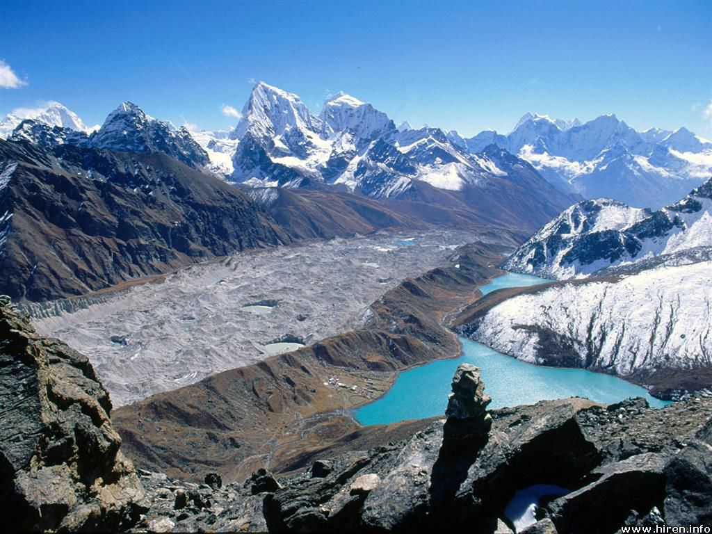
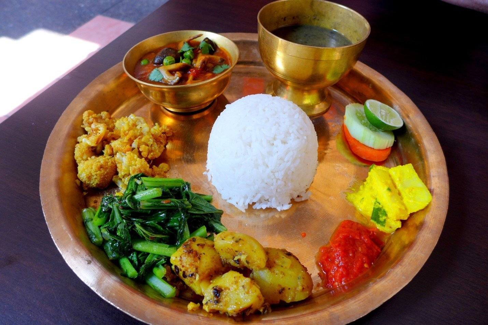

My country Nepal, a landlocked country in South Asia located in the Himalayan region.
The name "Nepal" is first recorded in texts from the Vedic Age, the era which founded Hinduism,
the predominant religion of the country. In the middle of the first millennium BCE, Gautama Buddha,
the founder of Buddhism, was born in southern Nepal.
Neolithic tools found in the Kathmandu Valley
indicate that people have been living in the Himalayan region for at least eleven thousand years.
 The Himalayan range has many of the Earth's highest peaks, including the highest, Mount Everest. The Himalayas include over fifty mountains exceeding 7,200 metres (23,600 ft) in elevation, including ten of the fourteen 8,000-metre peaks. Nepali Himalaya, great mountain system of Asia forming a barrier between the Plateau of Tibet to the north and the alluvial plains of the Indian subcontinent to the south. By contrast, the highest peak outside Asia (Aconcagua, in the Andes) is 6,961 metres(22,838 ft) tall. In the middle of the great curve of the Himalayan mountains lie the 8000m peaks of Dhaulagiri and Annapurna in Nepal, separated by the Kali Gandaki Gorge. The gorge splits the Himalayas into Western and Eastern sections both ecologically and orographically – the pass at the head of the Kali Gandaki, the Kora La is the lowest point on the ridgeline between Everest and K2.

Nepalese cuisine comprises a variety of cuisines based upon ethnicity, soil and climate
relating to Nepal's cultural diversity and geography.Dal-bhat-tarkari-achaar (Nepali:
दाल भात तरकारी) is eaten throughout Nepal. "Dal" is a soup made of lentils and spices,
served over boiled grain, "bhat"—usually rice but sometimes another vegetable curry,
"tarkari". Condiments are usually small amounts of extremely spicy pickle (achaar,
अचार) which can befresh or fermented. The variety of these is staggering, said to number
in the thousands. Other accompaniments may besliced lemon (nibuwa) or lime (kagati)
with fresh green chili (hariyo khursani). Dhindo (ढिंडो) is a traditional food of Nepal.